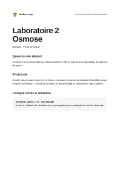
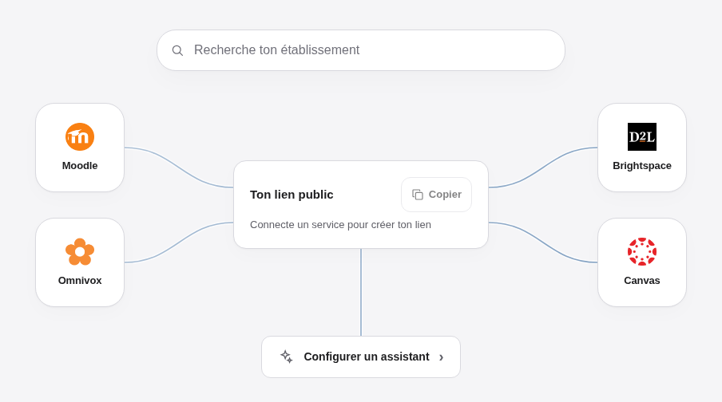
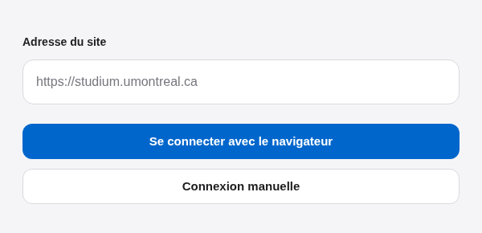
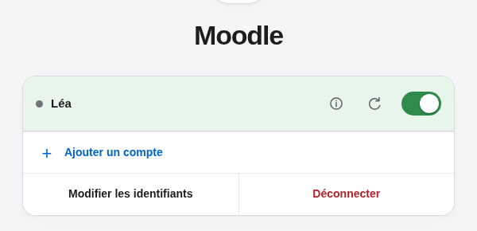
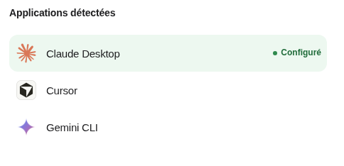
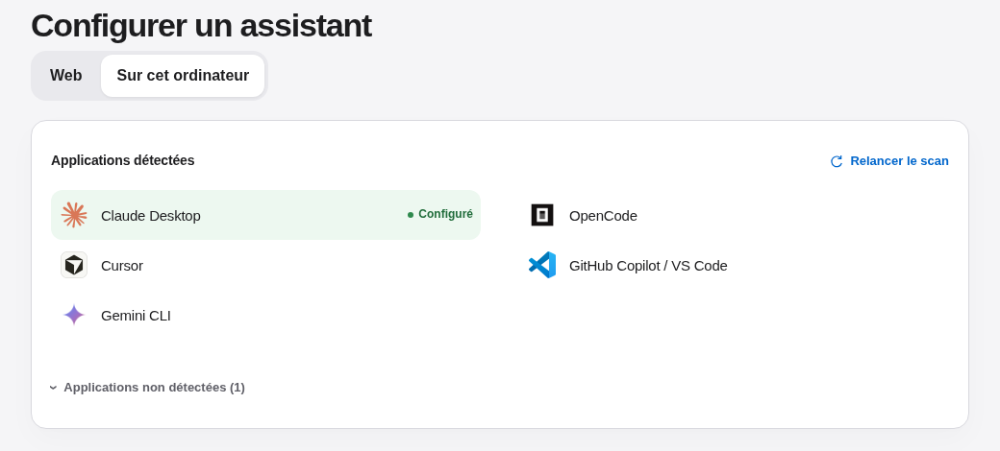

« Qu’est-ce qui compte pour ma note ? »
Sur Moodle, retrouve les évaluations d’un cours et leur pondération lorsqu’elle est publiée. Tu peux aussi retrouver une consigne ou ouvrir un document joint.
La date est sur ton portail. Les consignes sont dans un PDF. Relie ton école à ton assistant IA pour lui poser la question là où tu travailles déjà.
Qu’est-ce que j’ai à remettre cette semaine ?
Ton compte rendu de laboratoire est à remettre vendredi avant 17 h.

Laboratoire 2 — OsmoseOuvrir la fiche · PDFIllustration avec un cours fictif.
Un même portail peut porter un autre nom chez toi. StudiUM, par exemple, fonctionne avec Moodle.
La recherche utilise l’annuaire de l’app.
Sur Moodle, retrouve les évaluations d’un cours et leur pondération lorsqu’elle est publiée. Tu peux aussi retrouver une consigne ou ouvrir un document joint.
Sur Omnivox, consulte ton horaire de la semaine, les avis de cours annulés et les travaux dans Léa. Ton assistant peut aussi retrouver un message dans MIO.
Sur Brightspace, consulte les commentaires publiés avec tes notes. Tu peux aussi retrouver une annonce de cours ou la date d’un questionnaire.
Sur Canvas, demande la grille d’évaluation jointe au devoir, les consignes ou les commentaires sur ta remise. Le connecteur Canvas fonctionne en lecture seule.
Les informations accessibles dépendent de ton établissement.
Moodle, Omnivox, Brightspace ou Canvas : choisis ta plateforme, puis les comptes que tu veux relier à ton assistant.


Cherche ton établissement ou entre l’adresse de sa plateforme. Connecte-toi dans le navigateur, avec ta vérification habituelle si elle est demandée.

Donne un nom à chaque compte. Tu peux en désactiver un sans te déconnecter des autres, même s’ils utilisent la même plateforme.

Ajoute student-mcp à un assistant compatible, puis demande-lui : « Qu’est-ce que j’ai à remettre cette semaine ? »
student-mcp fait le lien avec tes cours. La conversation se passe dans l’assistant que tu utilises déjà.
Copie ton lien public depuis l’app dans les réglages du connecteur de ton assistant. Le même lien donne accès aux comptes que tu actives.
Les connecteurs personnalisés doivent être disponibles pour ton compte.
Dans « Configurer un assistant », choisis « Sur cet ordinateur ». Sélectionne une application détectée et confirme la configuration. Aucun lien public à copier.

Quelques repères pour ta première connexion.
Ton mot de passe scolaire n’est pas enregistré. Ton assistant reçoit les informations qu’il demande aux comptes activés. Pour la connexion web, toute personne qui possède le lien secret peut utiliser les outils activés, et le relais srv.us peut lire les échanges. Garde ce lien dans les réglages du connecteur, pas dans le chat.
Tu peux fermer l’onglet de réglages. student-mcp reste dans la barre des menus ou la zone de notification. Pour les connexions web, garde ton ordinateur allumé, éveillé et en ligne. Tu peux activer « Lancer au démarrage » dans l’app.
Tu peux lui demander le fichier original ou l’étude de pages précises. Pour un PDF, l’app peut transmettre le texte et l’image de chaque page demandée, figures comprises. Télécharger le document ne veut pas dire que l’assistant l’a lu en entier.
Canvas est en lecture seule. D’autres plateformes permettent aussi des actions, par exemple envoyer un MIO sur Omnivox ou déposer un devoir sur Brightspace. La demande de confirmation dépend des réglages de ton assistant.
Après l’installation, les réglages s’ouvrent dans ton navigateur.
Ouvre le fichier .exe et laisse « Open student-mcp » coché pour lancer l’app.
Télécharger pour WindowsL’installateur n’est pas signé. Windows peut afficher un avertissement à son ouverture. Ne désactive pas les protections du système.
Ouvre le fichier .dmg, lance « Install student-mcp », puis choisis « Install and open ».
Télécharger pour macOSL’installateur n’est pas signé. Si le développeur n’est pas identifié, tu peux autoriser l’app dans Réglages Système → Confidentialité et sécurité après la première tentative. Si macOS la signale comme endommagée ou malveillante, arrête l’installation.
Colle cette commande dans ton terminal. Le script sélectionne la version x64 ou ARM64 et vérifie le téléchargement.
curl -fsSL https://raw.githubusercontent.com/CloudDown/student-mcp/main/tools/packaging/install.sh | bash